6.810 Engineering Interactive Technologies (fall 2018)
OpenCV Lab
We think the entire tutorial can be done in 60-70 minutes, but if you need longer, deliverable 2 (everything working) is only due next friday in case you get stuck.
Deliverable: only Task 1 (end of class, Deadline: Oct 5, 2.30pm)
Once you finished Task 1 in this tutorial, make a .zip file of your working code and upload it to Gradebook.
Deliverable: entire tutorial (Deadline: Oct 12, 1pm)
When you are done with the entire tutorial (including Task 2+3), make a .zip file of your working code and upload it to Gradebook.
Here's what we are building today:
We are going to write a piece of Computer Vision software that extracts the position of the colored squares from each side of a Rubrik's cube and then solves the cube by giving you instructions on how to rotate each row/column.

Your job is to write the color-extraction with OpenCV.
We will give you code for the rest (i.e. the logic for solving the cube).
REMINDER: Don't forget to update your Milestone #1 for next friday with your team partner!
If you haven't done it yet, please do it before the end of the day! Go to your google drive team folder and fill in your milestone #1 into the change-this-weekly-detailed-milestone-spreadsheet.xls file! We will check next friday if you achieved this milestone, so think twice what you put in there.
Download the code
Start by cloning this repository. Open the rubiks-cube-code directory then navigate to the src folder. Here you will find several python scripts. Here is a general description of each python script.
qbr.py - This file contains high-level code for running the rubik's solver. You will run this script to test your code.
video.py - This file is where the computer vision processing happens. You will spend most of your time coding in this file.
colordetection.py - This file contains code for sampling colors from an image and classifying the colors.
combiner.py - This file contains a helper function for formatting the color data of the rubiks cube. You won't need to touch this file.
normalizer.py - This file provides a method for converting the encoded solution output into normal instructions. You won't need to touch this file either.
Task 1: Getting Acquainted with OpenCV
Before we get into extracting the colors of the cube for the solver we will learn to use some of the functions provided by OpenCV.
The first part of your task is to open the video.py file and initialize the camera (keep reading, we show you how to do it in the next sections).
'''
Initialize the camera here
'''
cam_port = # your code here task 1.1
cam = #
Here you will select a camera port and create a camera object with that port. If you are using a laptop, the default camera is port 0 and your external webcam would be port 1 when it is plugged in.
cam_port = 0 # I've set my camera port to port zero!
Now you can create a camera object using the camera port you selected. This will be done with one of OpnCV's built in functions.
cam = cv2.VideoCapture(cam_port) # I've created my camera object!
Now we have initialized the camera, but we are not yet reading frames from it.
To do this, navigate to the first main loop in the scan function of the video.py file.
while cameratesting:
'''
Here we want to make sure things are working and learn about how to use some openCV functions
Your code here
'''
#task 1.2 preview a camera window
#task 1.3 draw a rectangle
#task 1.4 make a slider
#task 1.5 make a mask based on hsv
#task 1.6 display the masked image
As you can see we will be using this loop to test some OpenCV functions.
The loop will execute infinitely and thus allows us to grab a new frame from the camera every time we go through it.
Let us start by creating a window, which we can later use to display frames.
Since we only need to create the window once, we want to do this *before* the cameratesting loop.
# before the cameratesting loop
# Creates a window named 'my_window_name'
cv2.namedWindow('my_window_name',0) # the zero makes the window adjustable
# Resizes the window
cv2.resizeWindow('my_window_name', 600, 600)
Now that we have a window, we can read frames from the camera and display them.
The cvWaitKey(ms) pauses the program for a certain number of ms. You need this line otherwise your computer has no time to catch up and your program will stall.
#task 1.2 preview a camera window
# Read a frame and display it in the window
# Captures a frame of video from the camera object
_,frame = cam.read()
#################################
#Add more processing code here
#################################
# Displays the frame on the window we made
cv2.imshow('my_window_name', frame)
# Sets the amount of time to display a frame in milliseconds
key = cv2.waitKey(10)
To run the code, navigate to your src directory using terminal, or powershell and run the command.
python ./qbr.py
You should get a window with a camera feed like this.
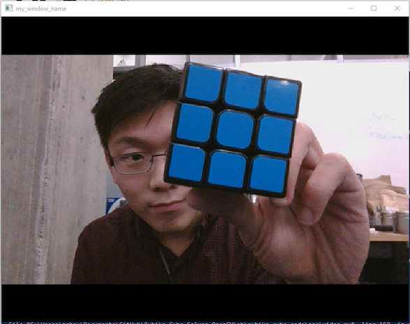
You can quit your program with control+C or right click on the icon in your task bar.
Now let's try drawing some rectangles on top of the image. Rectangles can often times be useful for highlighting important objects in a frame or just indicating bounds in a window. Be sure to add the rectangle code *before* you are displaying your window with the command cv2.imshow(). If you draw something with your code after you displayed the window/image nothing will show up.
#################################
#Add more processing code here
#################################
# Draw rectangle on the frame
cv2.rectangle(frame, (200,200), (250, 250), (255,0,0), 2)
# -1 borderwidth is a fill
cv2.rectangle(frame, (300,200), (350, 250), (0,0,255), -1)
# Note the construction of a rectangle
# arg1 = frame to draw on
# arg2 = x,y coordinates of the rectangle's top left corner
# arg3 = x,y coordinates of the rectangle's bottom right corner
# arg4 = r,g,b values
# arg5 = borderwidth => width of the border or make a fill using -1
# cv2.rectangle(frame, (xtop_left,ytop_left), (xbot_right,ybot_right), (r,g,b), borderwidth)

Next we will create sliders. These are particularly good for setting parameters such as the color thresholding values live. We will see how this works later in the lab. Create your slider *before* the camera testing loop, otherwise your code will create a new slider every frame, which we don't want!
# before the cameratesting loop (same place where you created + resized the window)
# Create a trackbar
# Note
# arg1 = track bar name
# arg2 = window to draw on
# arg3 = default start value
# arg4 = max value of range (range is always 0-max)
# arg5 = a callback function for when the bar changes value (can be an empty function,
# but be sure it's defined)
cv2.createTrackbar('My track bar','my_window_name',125,255, empty_callback)
Now inside the loop, we can read the current value of the trackbar.
# Write this in the camera testing loop to read the values live
# arg1 = trackbar name
# arg2 = window to pull trackbar info from
value = cv2.getTrackbarPos('My track bar','my_window_name')
print(value)
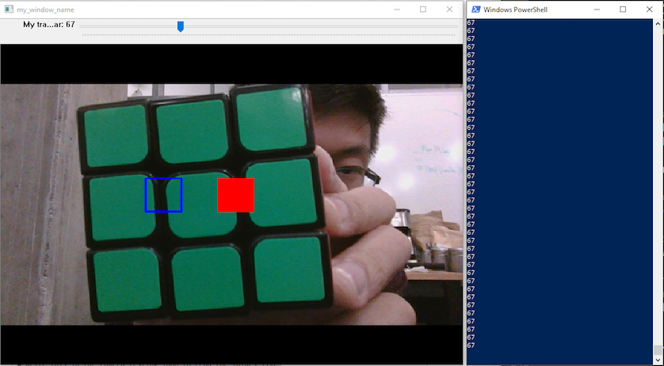
Now we are going to start putting things together to do some color filtering. The first step is to convert the current frame from RGB color space to HSV color space. Here is an overview of color spaces and why we are switching to HSV:
Intro to Color Spaces
RGB and CMYK are the most common color spaces.
RGB is used for on-screen images, while CMYK is used for printed content.
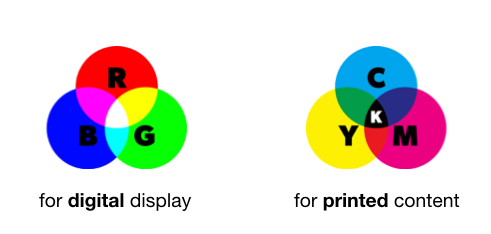
Your camera image is in RGB.
Is RGB a good color space for tracking color?
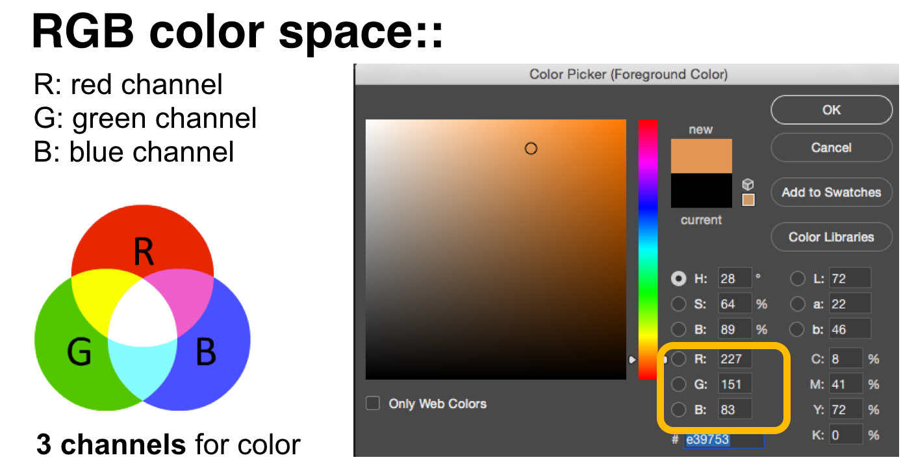
RGB encodes color in 3 different channels: R, G, and B.
For instance, the light orange in the image below consists of 227 Red parts mixed with 151 green parts and 83 blue parts.
Even just slightly changing the lighting situation in the room, will result in a big mess, i.e. all of these numbers change!
As you can see below, on a more sunny day, the same object might now be more saturated orange and all the numbers change.
Thus, it will be very difficult to color track an object (such as the Rubrik cube squares) using RGB color space!
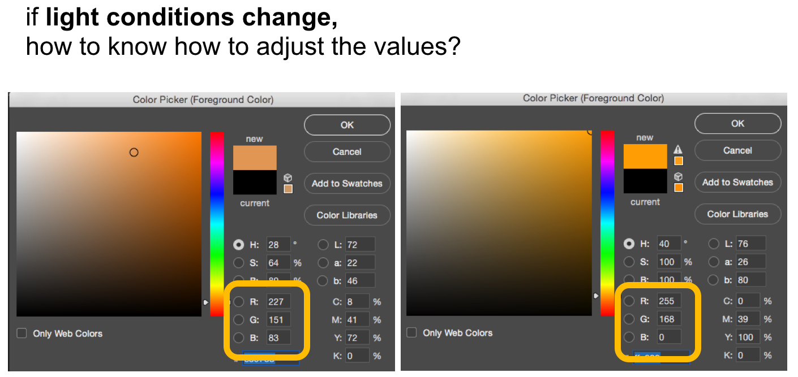
Now there is another color space called HSV (Hue, Satuation, Value).
This color space is much more suitable for our needs, since the hue-channel encodes all the different colors in a single channel (see below).
The saturation channel contains all the different saturated versions of this color and the value channel contains all the different brightness versions of this color.
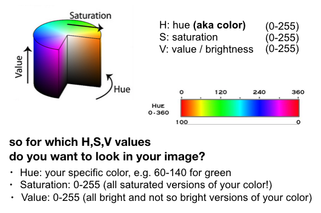
Thus, to track a specific color in HSV, we can simply select the range in Hue (e.g. 60-140 for green), and then include all saturations (0-255) and all values (0-255) of that color.
This allows us to track color independent of the current light situation in the room.
Note that in OpenCV, Hue has a range of (0-179)
Now let's convert the frame you are reading every round in the loop into an HSV image.
# Convert frame from RGB to HSV
# Note
# arg1 = frame
# arg2 = colorspace to convert to
hsv = cv2.cvtColor(frame, cv2.COLOR_BGR2HSV) # generates an hsv version of frame and
# stores it in the hsv image variable
Next make a mask (a mask is an matrix of binary values for every pixel in a frame). The mask will be used to cut out parts of the image. Based on some HSV values.
# create a mask
# Bounds for HSV values we are interested in (Blue)
lower_hsv = np.array([89,178,51]) #hmin,smin,vmin
upper_hsv = np.array([118,255,194]) #hmax,smax,vmax
# Note
# arg1 = hsv image
# arg2 = lower bound of HSV
# arg3 = upper bound of HSV
mask = cv2.inRange(hsv, lower_hsv, upper_hsv) # makes a mask where pixels with hsv in bounds
# will be one and pixels with hsv out of bounds
# will be zero
Now we will apply the mask to the original frame and display the masked frame.
# Apply the mask and display
# Bitwise and the frame with itself and apply the mask
frame = cv2.bitwise_and(frame,frame, mask= mask)
Results may vary with the lighting and where you place your code relative to the rectangle code, but it should produce a result similar to this. Make sure you are showing the *blue* side to the camera since we are tresholding/masking for the blue color with lower_hsv and upper_hsv.Feel free to tweak the lower and upper hsv bounds to filter different colors (we will do this in a better way in a minute using the sliders, so don't spend too much time with hard coded hsv values at this point).
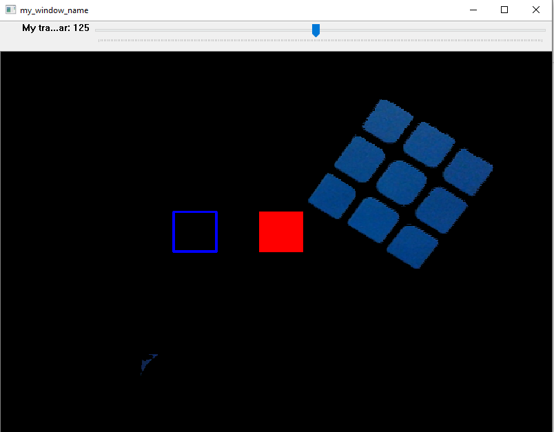
Congratulations!! You've been acquainted with OpenCV.
Code Overview
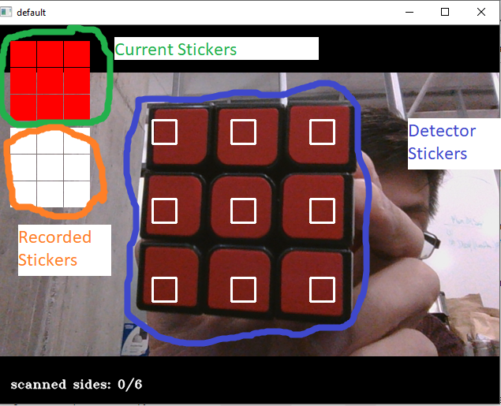
Before we move on to the next task here is a quick overview of how the rubik's solver works and what you are implementing. The solver reads in color data from specified locations on the screen (detector stickers). It then classifies the colors based on some calibration parameters and displays what is sees (current stickers).
When the user presses the space bar, the face of stickers is recorded and the most recent set that was recorded is displayed (recorded stickers). The orientation of the cube matters during recording, which we will specify later in the tutorial. The order of faces recorded is not important though. Each face is identified by the color of the middle square (no matter how you change the pieces of the cube the middle piece will always have the same color, i.e. side one always has yellow in the middle, side 2 always green etc.). If any recorded data is bad, you can record again by pressing space again and it will simply override what you had recorded for that specific side (again identified by the color of the middle piece).
When the user presses "c", the window will change to a calibration mode where each color can be calibrated using trackbars. There is a text indicator of which color is being calibrated and pressing space will cycle through the colors. Once all 6 colors are calibrated, the window will return to the detection mode.
You will be drawing the stickers for detecting colors, indicating currently seen colors, and recorded colors. You are also responsible for making the trackbars, and masks for thresholding
colors.
Deliverable: only Task 1 (end of class, Deadline: Oct 5, 2.30pm)
Once you finished Task 1 in this tutorial, make a .zip file of your working code and upload it to Gradebook.
Task 2: Draw the Stickers
Start by commenting out the code you added outside the camera testing loop for the window and trackbar.
Navigate to the top of the video.py file and set the cameratesting variable to False (we are now moving on to the real code, i.e. the loop that starts with *while not cameratesting*. Before moving on, make sure the new *while not cameratesting* loop is also (1) reading the current frame, (2) converting it to hsv, and (3) pausing every 10ms to wait for key input (just copy from previous code).
while not cameratesting:
_, frame = None # your code here
hsv = None # your code here
key = None # your code here
Now take a look at the three helper functions draw_detector_stickers, draw_current_stickers, and draw_recorded_stickers. As the name implies we will use these functions to draw some stickers on the image to give us some visual feedback.
Here's one example for the draw_current_stickers function for reference. The current_stickers variable contains the coordinates of the top left corner of each sticker. Note that the current stickers are squares with side length 32 and are filled with color based on the current colors being detected by the camera.
def draw_current_stickers(frame, state):
"""Draws the 9 current stickers in the frame."""
for index,(x,y) in enumerate(current_stickers):
cv2.rectangle(frame, (x,y), (x+32, y+32), ColorDetector.name_to_rgb(state[index]), -1)
#ColorDetector.name_to_rgb is generating an RGB value in format (R,G,B)
#for white, you can use (255,255,255) as argument and (0,0,0) for black
#-1 means the sticker is filled, using 0 instead makes it unfilled
Next you will implement the same thing for the draw_recorded_stickers function. This function should draw the 9 recorded stickers based on the most recent recorded state. Reference the draw_current_stickers function. The recorded_stickers variable contains the coordinates of the top left corner of each sticker. The stickers should be squares filled with side length 32 and color equal to the colors given by state.
Finally, implement the draw_detector_stickers, these are physical indicators of where we should hold the cube in front of the camera. This is important because the color detection for each sticker is fixed. The detector_stickers variable contains the coordinates of the top left corner of each sticker. Each detector sticker should be a square with side length 30 and border width 2. The border should be white.
To check verify your code, run qbr.py. You should see the stickers overlaid on your screen similar to this image.
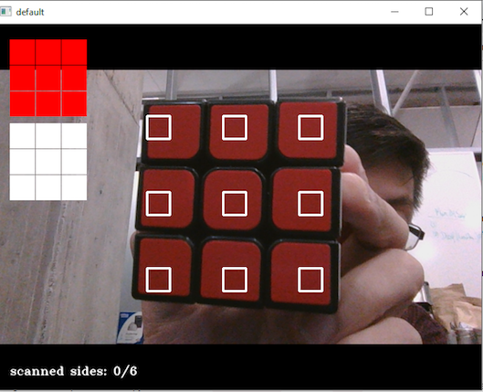
Task 3: Add Trackbars and Masking
Next you will need two trackbars for each H, S, and V (6 trackbars in total).
We have already given you the two min and max trackbars for H (you can see them on top of the window).
# create trackbars here
cv2.createTrackbar('H Upper',"default",defaultcal[color[len(colorcal)]][0][0],179, empty_callback)
cv2.createTrackbar('H Lower',"default",defaultcal[color[len(colorcal)]][0][1],179, empty_callback)
# Remember that H has a range of 0-179 while S and V have 0-255
# make four more trackbars for ('S Upper', 'S Lower', 'V Upper', 'V Lower')
# Please use exactly these trackbar names to make other parts of the code run properly
Now you have created the trackbars, but you still need to obtain the trackbar values when the user is dragging the sliders. These values are taken by the code and organized into upper and lower bound arrays for masking.
#this code goes below the: if key == 99: statement, search for:
# hue upper lower
hu = cv2.getTrackbarPos('H Upper','default')
hl = cv2.getTrackbarPos('H Lower','default')
# saturation upper lower
su = None # yourcode here
sl = None # yourcode here
# value upper lower
vu = None # yourcode here
vl = None # yourcode here
Now for the masking. Note that red and orange have an abnormal thresholding due to their position in the Hue space (approx hue range => 0-7 && 169-179). For this reason you only need to create a mask for the other colors and this is done once here.
# search where it says:
# Task 3
mask = None # your code here
res = None # your code here
To test this code you will run the qbr.py script and press 'c'. This will initiate the calibration state. You should then be able to adjust calibration values using your track bars to filter the color you are calibrating for.
If your computer is slow, try a higher value for waitkey, e.g. waitkey(1000).
Also remember that you don't have to perfectly calibrate the entire image since we are going to hold the cube over the 'detection stickers' and only there we need to make sure the right color is extracted.
Here are some good calibrations:
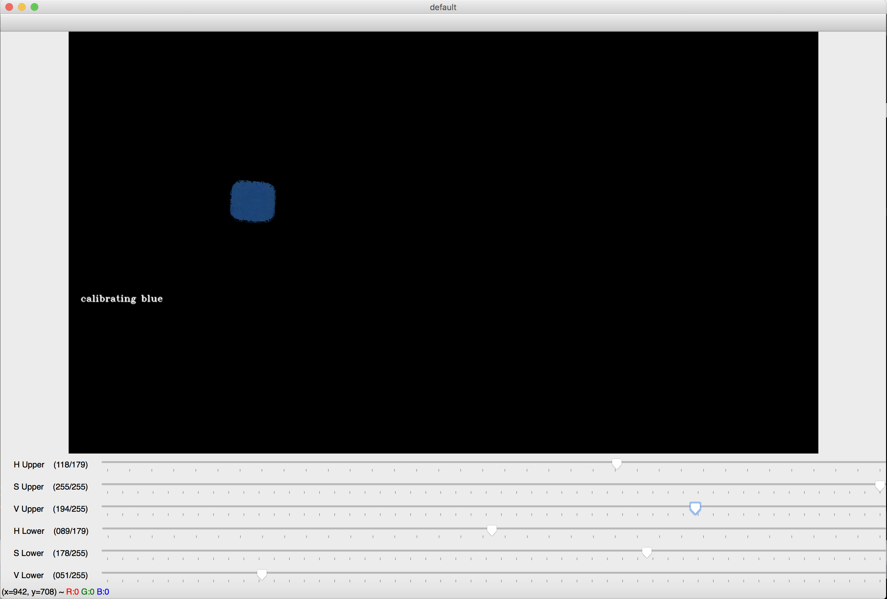
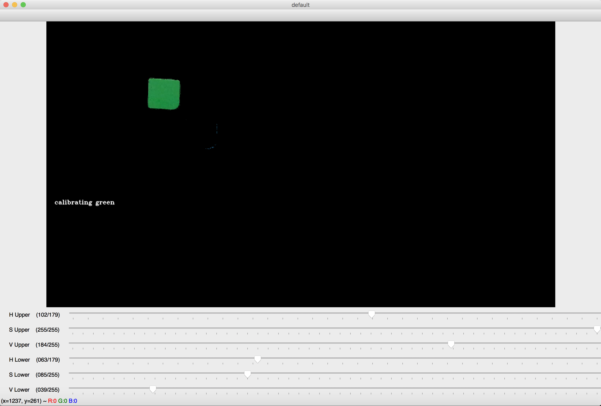
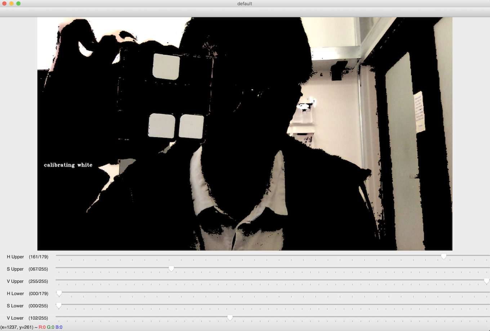
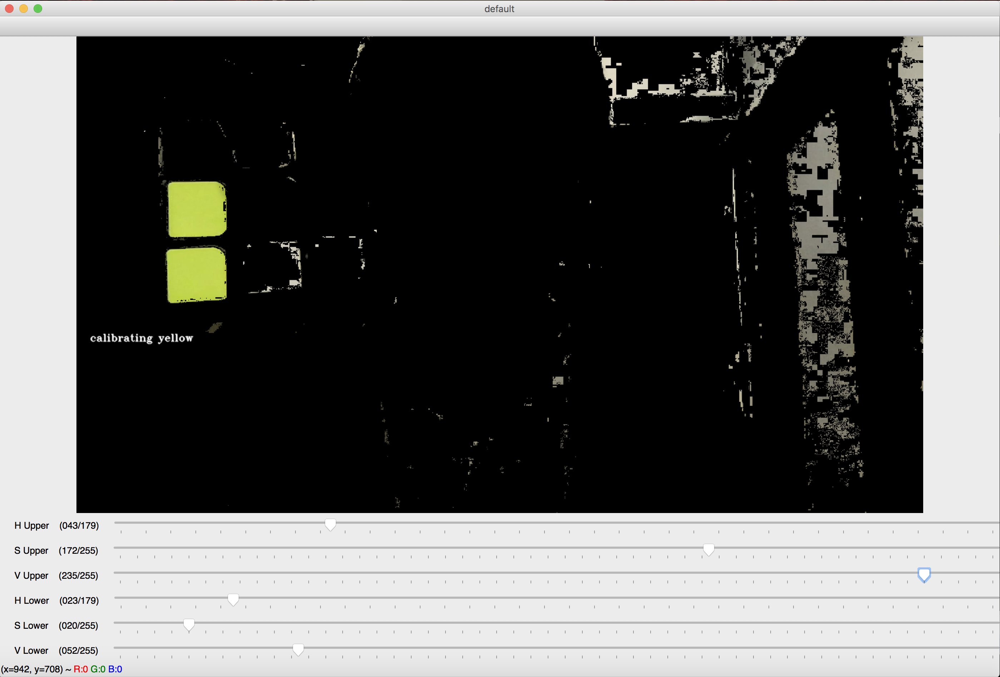
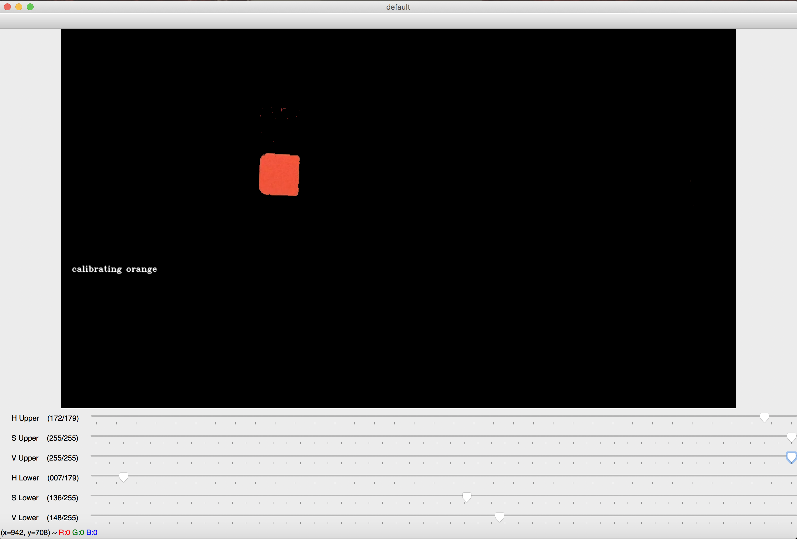
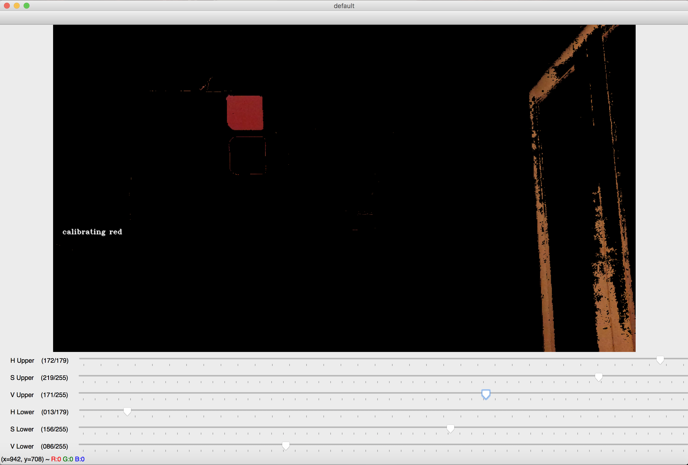
Here are some bad calibrations:
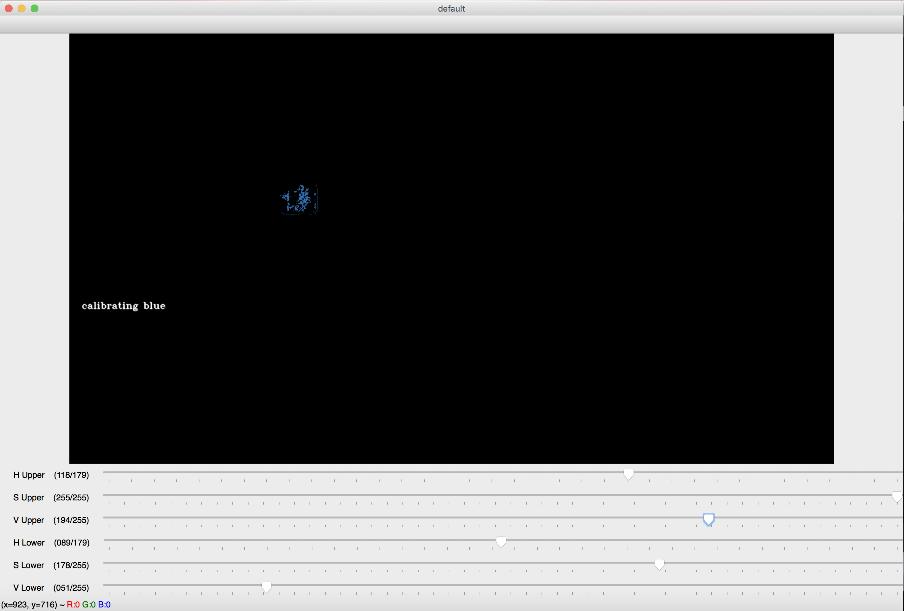
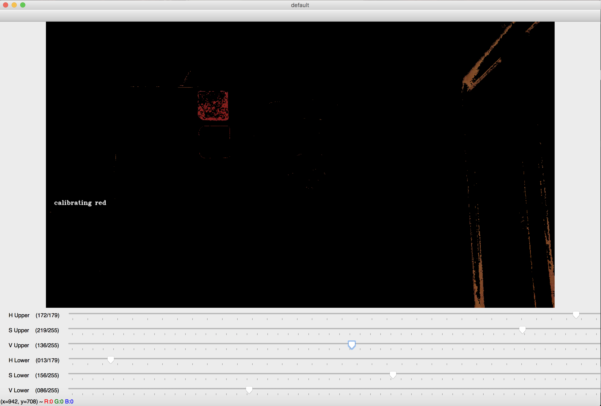
Finally: Solve Some Cubes!
Now that you have all the missing puzzles filled up, let's solve some cubes!
Navigate to rubiks-cube-code/src folder, run the qbr.py file (via terminal or your preferred python IDEs). If you implemented everthing correctly so far, you should see your laptop camera window pop up with similar UI shown down below. You might want to manually drag and adjust the window size for better fit on screen.
As specified above, you should check/set the color calibration threshold first by press 'c'. This will initiate the calibration state. You should then be able to adjust calibration values using your track bars to filter the indicated color written on window. Press space to "set" the current thredshold and move to next color.
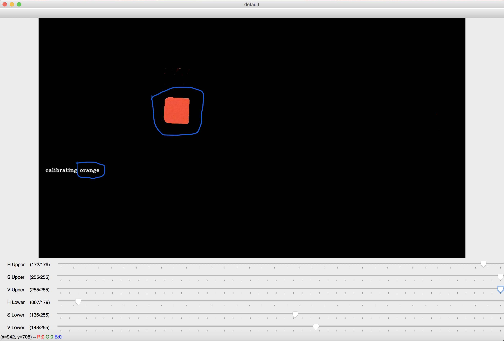
The pre-defined thresholds for each color should work pretty decent for most of the cases, so you probably don't have to adjust much at this point. Still, go through the color calibration state just in case. It is useful to mention that you can press 'c' any time, while the camera is open, to change a specific color thredshold on the fly. This function can be quite handy when you run into the situation where one color brick does not get recognized on some cube faces.
After the color calibration state, you can go ahead and scan the cube faces one by one. The six center bricks will be used as each face's identifier, since they don't really move. The order of faces get scanned does not matter, and you can scan as many times as you want. The program will overwrite the old scan when same side is detected. However, the rotation of face does matter when scanning. Below attached is the 2D Rubiks cube graph. For each of the six faces, you should scan the face with its index "1" "2" "3" on the top and put it towards camera.
[Front: green] [Right: red] [Back: blue] [Left: orange] [Upper: white] [Down: yellow]
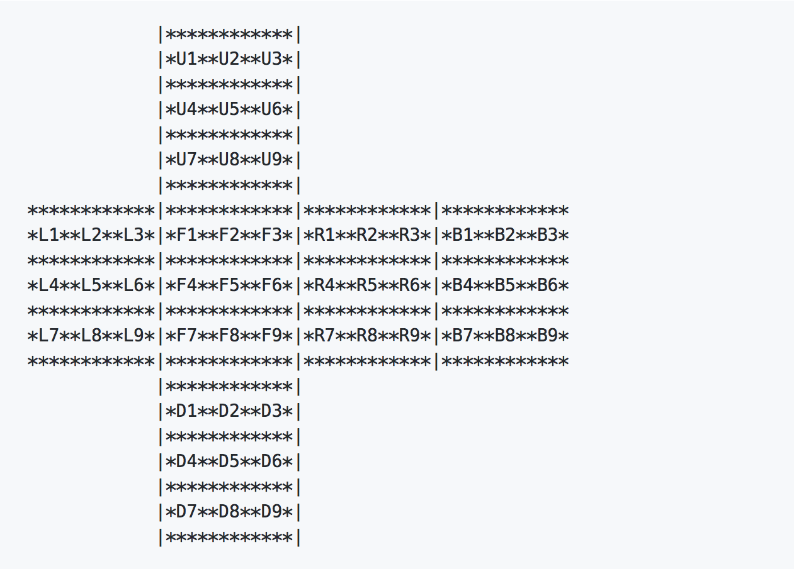
When the program indicates "scanned sides: 6/6", means all six faces have been recorded at least once. You can then press etc to exit the camera window. If you scan the six faces correctly, the cube solvtion will print out onto concole.
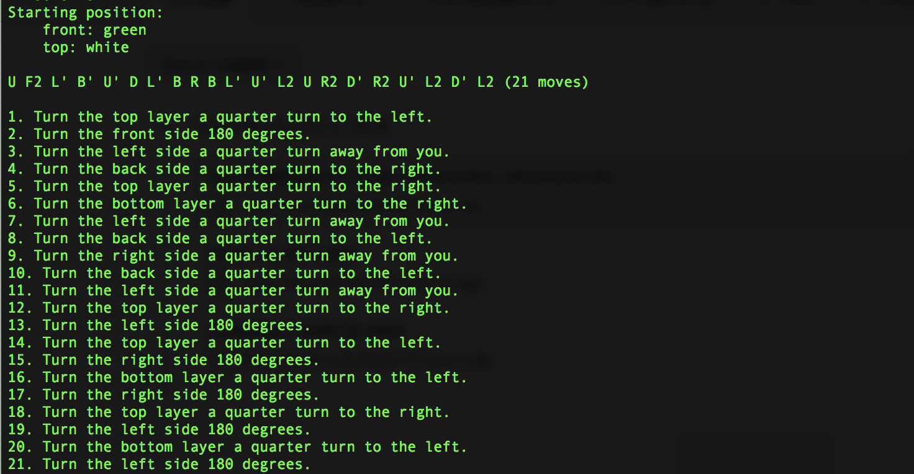
If you somehow scan the six faces incorrectly, or pressed etc before the program records all six faces, a error message will show up on the concole. You will have to run the qbr.py again :(
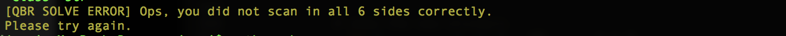
So... Happy solving folks!
Deliverable: entire tutorial (Deadline: Oct 12, 1pm)
When you are done with the entire tutorial (including Task 2+3), make a .zip file of your working code and upload it to Gradebook.
'''
Initialize the camera here
'''
cam_port = # your code here task 1.1
cam = #cam_port = 0 # I've set my camera port to port zero!cam = cv2.VideoCapture(cam_port) # I've created my camera object!while cameratesting:
'''
Here we want to make sure things are working and learn about how to use some openCV functions
Your code here
'''
#task 1.2 preview a camera window
#task 1.3 draw a rectangle
#task 1.4 make a slider
#task 1.5 make a mask based on hsv
#task 1.6 display the masked image# before the cameratesting loop
# Creates a window named 'my_window_name'
cv2.namedWindow('my_window_name',0) # the zero makes the window adjustable
# Resizes the window
cv2.resizeWindow('my_window_name', 600, 600)
#task 1.2 preview a camera window
# Read a frame and display it in the window
# Captures a frame of video from the camera object
_,frame = cam.read()
#################################
#Add more processing code here
#################################
# Displays the frame on the window we made
cv2.imshow('my_window_name', frame)
# Sets the amount of time to display a frame in milliseconds
key = cv2.waitKey(10)
python ./qbr.py #################################
#Add more processing code here
#################################
# Draw rectangle on the frame
cv2.rectangle(frame, (200,200), (250, 250), (255,0,0), 2)
# -1 borderwidth is a fill
cv2.rectangle(frame, (300,200), (350, 250), (0,0,255), -1)
# Note the construction of a rectangle
# arg1 = frame to draw on
# arg2 = x,y coordinates of the rectangle's top left corner
# arg3 = x,y coordinates of the rectangle's bottom right corner
# arg4 = r,g,b values
# arg5 = borderwidth => width of the border or make a fill using -1
# cv2.rectangle(frame, (xtop_left,ytop_left), (xbot_right,ybot_right), (r,g,b), borderwidth)
# before the cameratesting loop (same place where you created + resized the window)
# Create a trackbar
# Note
# arg1 = track bar name
# arg2 = window to draw on
# arg3 = default start value
# arg4 = max value of range (range is always 0-max)
# arg5 = a callback function for when the bar changes value (can be an empty function,
# but be sure it's defined)
cv2.createTrackbar('My track bar','my_window_name',125,255, empty_callback)
# Write this in the camera testing loop to read the values live
# arg1 = trackbar name
# arg2 = window to pull trackbar info from
value = cv2.getTrackbarPos('My track bar','my_window_name')
print(value)
# Convert frame from RGB to HSV
# Note
# arg1 = frame
# arg2 = colorspace to convert to
hsv = cv2.cvtColor(frame, cv2.COLOR_BGR2HSV) # generates an hsv version of frame and
# stores it in the hsv image variable
# create a mask
# Bounds for HSV values we are interested in (Blue)
lower_hsv = np.array([89,178,51]) #hmin,smin,vmin
upper_hsv = np.array([118,255,194]) #hmax,smax,vmax
# Note
# arg1 = hsv image
# arg2 = lower bound of HSV
# arg3 = upper bound of HSV
mask = cv2.inRange(hsv, lower_hsv, upper_hsv) # makes a mask where pixels with hsv in bounds
# will be one and pixels with hsv out of bounds
# will be zero
# Apply the mask and display
# Bitwise and the frame with itself and apply the mask
frame = cv2.bitwise_and(frame,frame, mask= mask)
while not cameratesting:
_, frame = None # your code here
hsv = None # your code here
key = None # your code here
def draw_current_stickers(frame, state):
"""Draws the 9 current stickers in the frame."""
for index,(x,y) in enumerate(current_stickers):
cv2.rectangle(frame, (x,y), (x+32, y+32), ColorDetector.name_to_rgb(state[index]), -1)
#ColorDetector.name_to_rgb is generating an RGB value in format (R,G,B)
#for white, you can use (255,255,255) as argument and (0,0,0) for black
#-1 means the sticker is filled, using 0 instead makes it unfilled
# create trackbars here
cv2.createTrackbar('H Upper',"default",defaultcal[color[len(colorcal)]][0][0],179, empty_callback)
cv2.createTrackbar('H Lower',"default",defaultcal[color[len(colorcal)]][0][1],179, empty_callback)
# Remember that H has a range of 0-179 while S and V have 0-255
# make four more trackbars for ('S Upper', 'S Lower', 'V Upper', 'V Lower')
# Please use exactly these trackbar names to make other parts of the code run properly
#this code goes below the: if key == 99: statement, search for:
# hue upper lower
hu = cv2.getTrackbarPos('H Upper','default')
hl = cv2.getTrackbarPos('H Lower','default')
# saturation upper lower
su = None # yourcode here
sl = None # yourcode here
# value upper lower
vu = None # yourcode here
vl = None # yourcode here
# search where it says:
# Task 3
mask = None # your code here
res = None # your code here